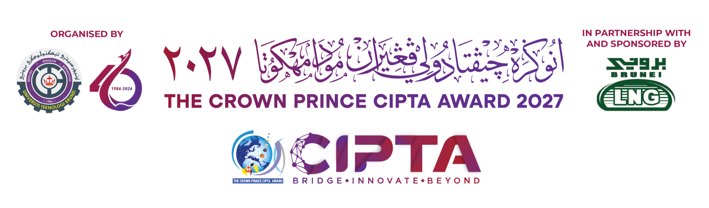
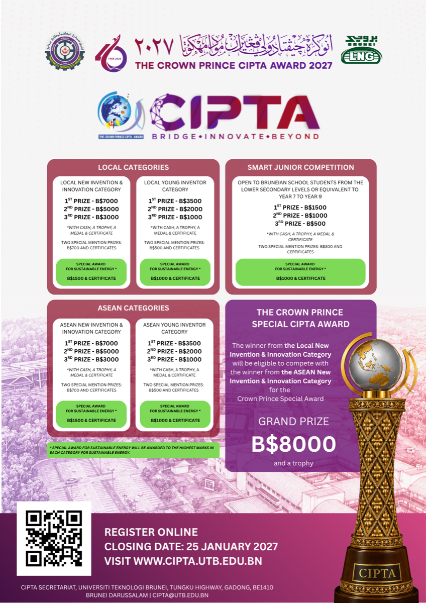
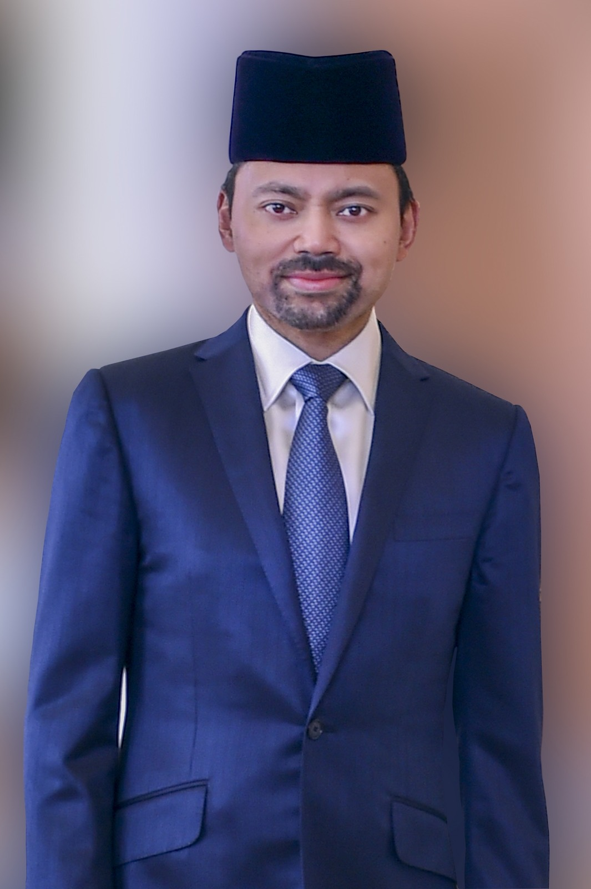
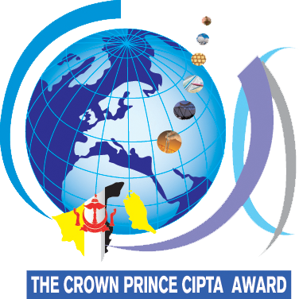
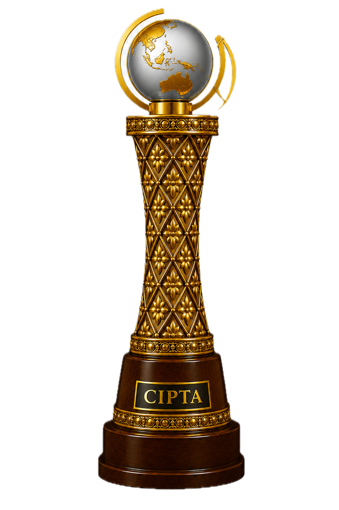
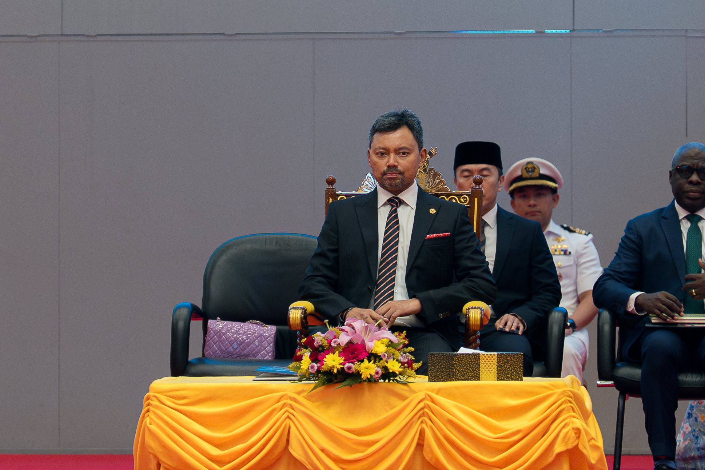

Why This Matters
CIPTA 2027 is now framed around the current competition cycle
The page now reflects the live competition cycle, including the new theme, current launch date, and submission milestones through 2027.

Universiti Teknologi Brunei
Bridge. Innovate. Beyond. Brunei Darussalam’s premier competition for invention, innovation, and creative technological advancement welcomes participants from Brunei Darussalam and the ASEAN region.
Registration is now open. Closing date: 25 January 2027.

Open full poster in a new tabWhy This Matters
The page now reflects the live competition cycle, including the new theme, current launch date, and submission milestones through 2027.
Audience Focus
The official scope covers schools, technical and tertiary institutions, public and private organisations, start-ups, entrepreneurs, and the general public.
Competition Scope
CIPTA continues to position itself as a biennial platform for showcasing inventions and technological advancement from Brunei Darussalam and the ASEAN region.
Patron

The competition is graced with the patronage of the Crown Prince, Senior Minister at the Prime Minister’s Office, and the Pro-Chancellor of Universiti Teknologi Brunei (UTB), His Royal Highness Prince (Dr.) Haji Al-Muhtadee Billah with the consent of His Majesty the Sultan Haji Hassanal Bolkiah Mu'izzaddin Waddaulah ibni Al-Marhum Sultan Haji Omar 'Ali Saifuddien Sa'adul Khairi Waddien and Yang Di-Pertuan of Brunei Darussalam. The competition therefore carries the prestigious Crown Prince’s Creative, Innovative Product and Technological Advancement (CIPTA) award or the Crown Prince’s ‘CIPTA’ Special Award for the overall winner of the competition.
Theme
In an increasingly interconnected world, innovation thrives when ideas, people, and disciplines come together. The theme “Bridge. Innovate. Beyond”, reflects the importance of building meaningful connections that enable transformative solutions for the challenges of today and tomorrow. By bridging knowledge, industries, cultures, and technologies, innovation can move beyond conventional boundaries and create lasting impact.
At its core, this theme emphasizes collaboration as the foundation for progress. Bridging gaps between academia, industry, government, and society allows diverse perspectives to converge, fostering creative thinking and accelerating the development of impactful solutions. Through such partnerships, innovative ideas can evolve into practical applications that benefit communities and economies.
Innovation lies at the heart of this journey. By harnessing emerging technologies, creative thinking, and multidisciplinary approaches, innovators are empowered to develop solutions that respond to global and regional challenges. Whether in sustainability, digital transformation, healthcare, or advanced technologies, innovation continues to shape a future that is more inclusive, resilient, and forward-looking.
The call to move “Beyond” encourages participants to think beyond traditional limits -beyond existing frameworks, beyond geographical boundaries, and beyond conventional ways of problem-solving. It challenges innovators to explore new possibilities, scale impactful ideas, and reimagine the future through bold and visionary thinking.
Aligned with Brunei Darussalam’s aspirations for a knowledge-based and innovation-driven economy, CIPTA 2027 provides a platform for innovators, researchers, start-ups, entrepreneurs, and students to connect, collaborate, and showcase breakthrough ideas. By bridging expertise and inspiring innovation, CIPTA continues to foster solutions that go beyond expectations and contribute to sustainable progress.
CIPTA 2027 welcomes innovative minds from Brunei Darussalam and the ASEAN region to come together under the theme “Bridge. Innovate. Beyond”. Together, let us build connections, spark creativity, and push the boundaries of innovation towards a future filled with new opportunities and transformative possibilities.
Objectives
Scope of Competition
The objective of the competition is to foster and nurture a culture of creativity, invention and innovation in Brunei Darussalam. Aptly named the Creative, Innovative Product and Technological Advancement (CIPTA) competition, the acronym 'CIPTA' holds significance as it translates to 'create' or 'invent' in Malay.
The competition is held biennially since its inauguration in 2005. Universiti Teknologi Brunei (UTB), formerly known as Institut Teknologi Brunei (ITB) is the pioneer and organiser of the competition.
The competition encompasses all areas of Science, Engineering, Technology and Innovation. The competition welcomes participation from schools, technical and tertiary academic institutions, government and private organizations, start-ups, entrepreneurs, as well as the general public. It serves as a platform for individuals and entities across Brunei Darussalam and the ASEAN region to showcase their innovative ideas and technological advancements.
Competition Categories
Local Categories
Smart Junior
ASEAN Categories
Important Dates
Registration
Registration Status
Closing date for registration and abstract submission: 25 January 2027. All entries must be submitted through the official online form together with the required supporting documents.
Required Uploads
Entry Fees
Payments
Bank Details
Competition Identity

A suitable logo was designed through a competition among Universiti Teknologi Brunei (UTB)’s staff and students. The winning logo design was created by Pg Dr Haji Md Esa Al-Islam bin Pg Haji Md Yunus, former Principal Lecturer of Mechanical Engineering Programme Area / former Assistant Vice-Chancellor (Academic) of UTB.
Award Symbolism
A new perpetual rotating trophy is introduced beginning with this edition of CIPTA 2027. The rotating trophy will remain a symbol of excellence and prestige, while future Crown Prince Special CIPTA Award winners, should there be one, will be presented with a 3D-printed replica trophy to take home as a lasting memento of their accomplishment.
The CIPTA trophy is designed to symbolize excellence in innovation, sustainability, and global collaboration. The golden globe at the top represents the global impact of ideas and innovations, reflecting how transformative solutions developed locally can contribute to progress on an international scale.
The curved arcs surrounding the globe are inspired by the distinctive form found in the CIPTA logo. These arcs resemble the Crown Prince CIPTA Award emblem, symbolising prestige, honour, and royal recognition. Their upward sweeping motion conveys aspiration, leadership, and the pursuit of excellence, reinforcing the award’s status as a distinguished regional recognition for outstanding innovation.
The ornate lattice column incorporates repeating Bunga Simpur, the national flower of Brunei Darussalam. The decorative Ayer Muleh band beneath the globe is a traditional Bruneian ornamental motif, which features Simpur leaves and flowers, symbolises continuity, harmony, and Brunei's natural heritage. These natural forms highlight the connection between innovation and sustainability, reflecting the award’s emphasis on responsible technological advancement.
Finally, the solid wooden base with the “CIPTA” nameplate conveys stability, heritage, and prestige, grounding the design in tradition while celebrating forward-looking innovation. Together, these elements create a trophy that reflects the spirit of the Crown Prince CIPTA Award recognising visionary ideas that contribute to sustainable and impactful progress, providing an inspiration towards achieving the national “Vision 2035” and thus elevate Brunei Darussalam in the global setting.

CIPTA 2025 Gallery
A selected set of featured moments from the Crown Prince CIPTA Award 2025 Ceremony held at the International Convention Centre, Brunei Darussalam.





Past Winners
Browse the dedicated archive by competition year to review official results across the Crown Prince Special Award, Local Competition, Smart Junior Competition, and ASEAN Competition.
Resources
Programme
Read the official UTB news announcement for the launching of the Crown Prince CIPTA Award 2027, held on Thursday, 25 June 2026 at Auditorium Hall, Balai Khazanah Islam Sultan Haji Hassanal Bolkiah.
Registration
This website summarises the entry requirements, category fees, payment methods, and supporting documents needed for CIPTA 2027 registration.
Downloads
Proposal forms, endorsement materials, category details, and official archive references are available to help participants prepare complete submissions.
Contact
Universiti Teknologi Brunei, Jalan Tungku Link, Gadong BE1410, Brunei Darussalam
Main line: (+673) 2461020 / 1 / 2 / 3